September
October
November
December
Birthstones
September - December
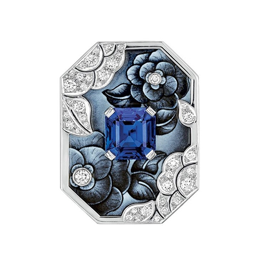
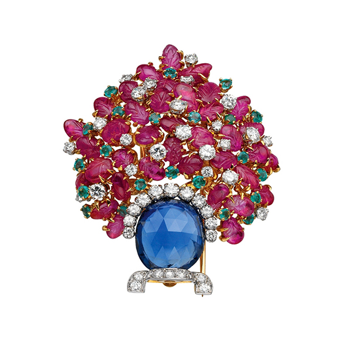
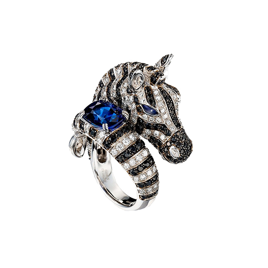
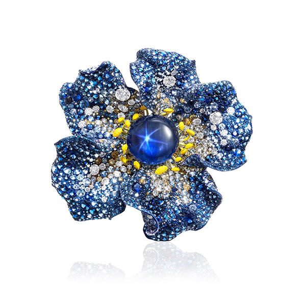
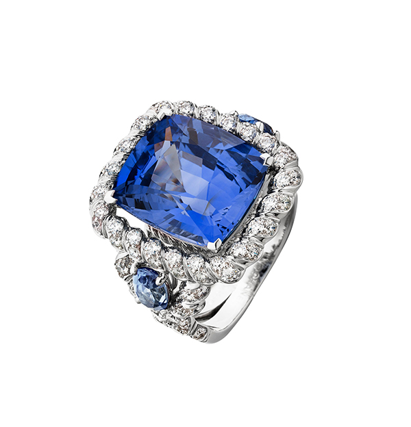
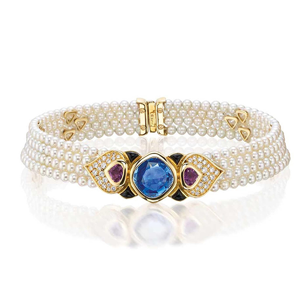
藍寶石 Sapphire
藍寶石，有個很好聽的英文名字 - sapphire ，源於希伯來文 sappir ，意為「臻於完美」；自古以來就有「帝王之石」之稱，幾乎每一代皇室都深受吸引。 傳說藍寶石可讓佩戴者免遭人妒忌，並蒙受神靈垂愛。古代國王就在頸間配戴藍寶石，作為護身防禦物。而從古文化時期，藍寶石就被用來裝飾清真寺、教堂，或嵌在宗教用的聖器上。
蛋白石 Opal
蛋白石英文名稱 Opal ，源於希臘語 Opallios ，意思是「顏色的變化」，因蛋白石的顏色光澤獨特而得名，最初被注意可追溯千年前，因為特有的多變美麗遊彩而被象徵人的愛情。其彩虹般絢麗耀目充滿神秘，是其它寶石無可比擬。
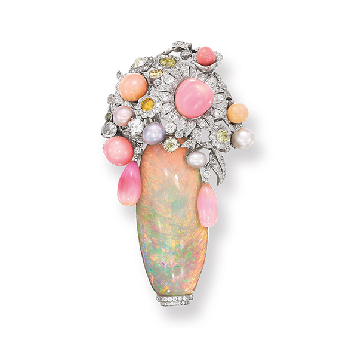
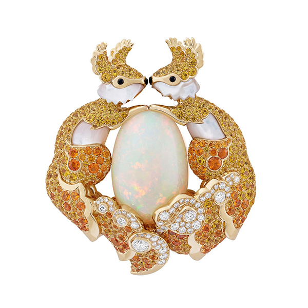
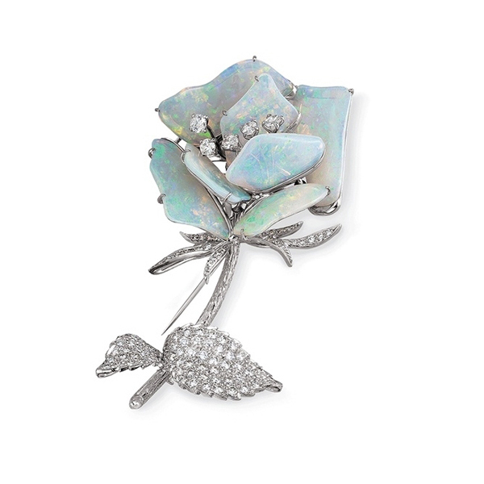
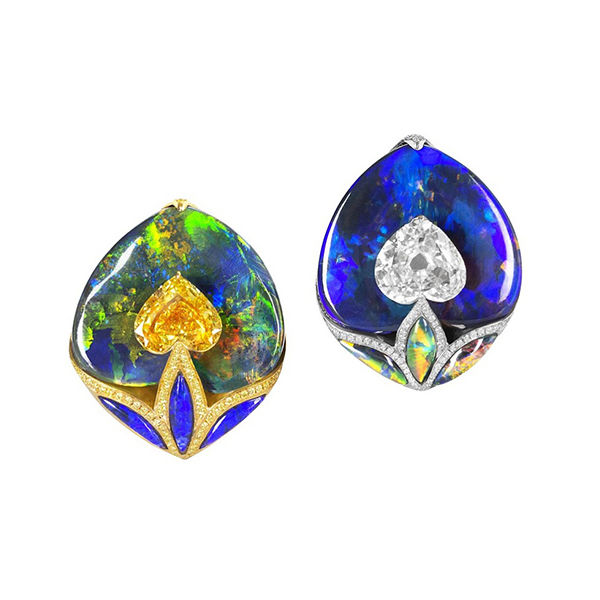
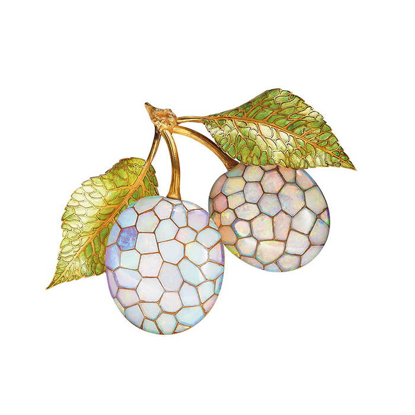
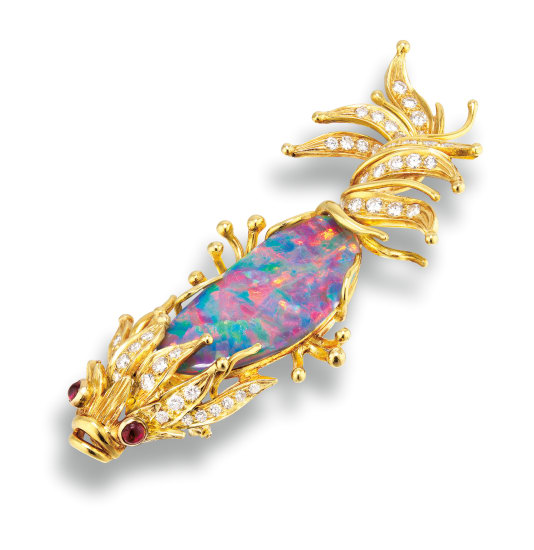
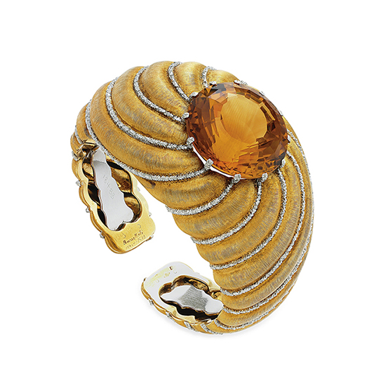
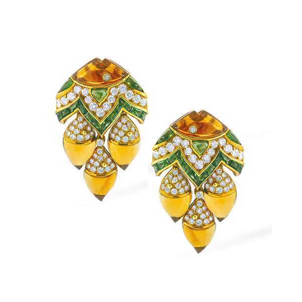
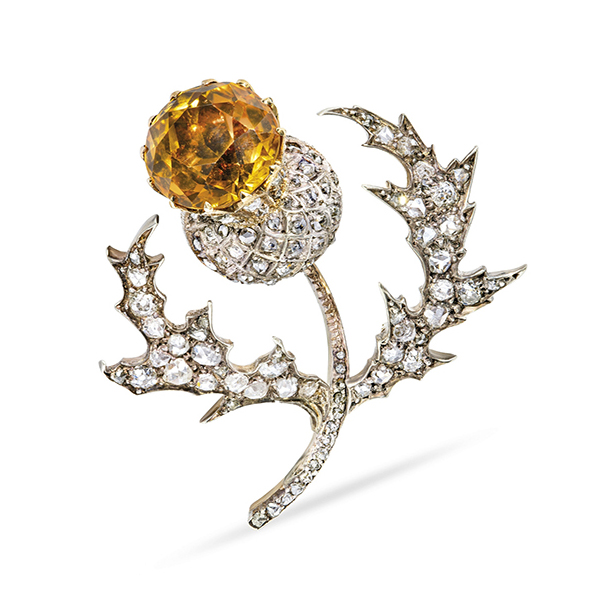
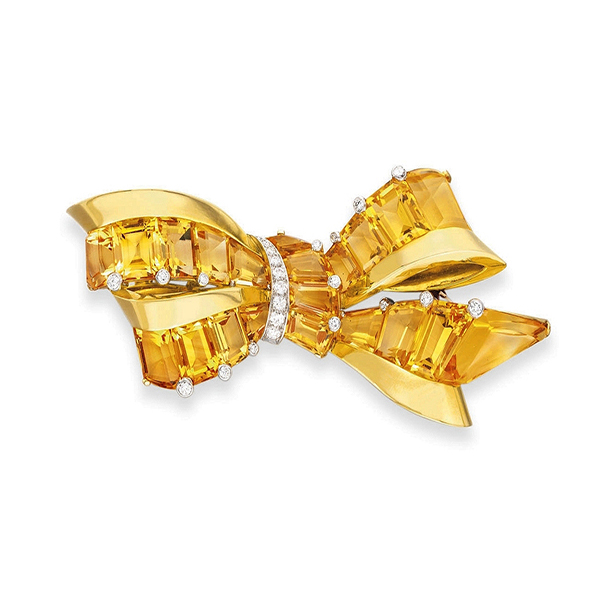
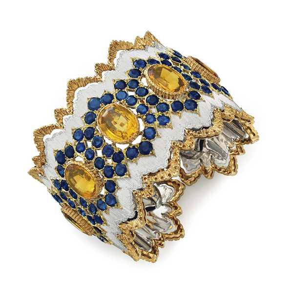
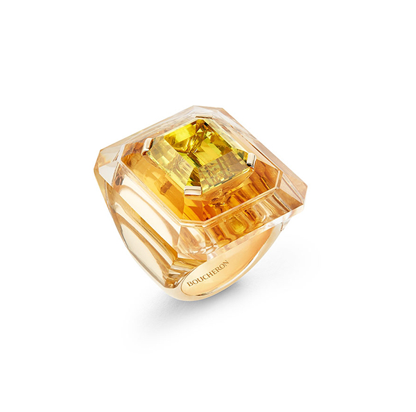
黃水晶 Citrine
黃水晶，英文 Citrine；源自法文的 Citron 及英文Citrus，是「柑橘類果實、淡黃色」之意。寶石級的黃水晶極為稀有，其硬度為7，顏色的形成主要是因為鐵離子，色澤從淺黃、正黃、酒黃到褐黃都有。 顏色鮮明活潑的黃水晶幾乎適合於任何珠寶風格，尤其和華貴的黃金極為合拍。有著類似太陽光的明亮耀眼，遠古時代人們即隨身攜帶黃水晶，用來防毒蛇和邪惡。
土耳其石 Turquoise
土耳其石又稱綠松石，有趣的是土耳其並不產 土耳其石 ，推測應是古代波斯出產，經土耳其運往歐洲，人們以為產於其地而得名。 依礦石中所含鐵和銅的多寡而呈現出不同的色彩。品質好的土耳其石呈藍綠色和綠藍色，蒼白色到淡藍色則次之。
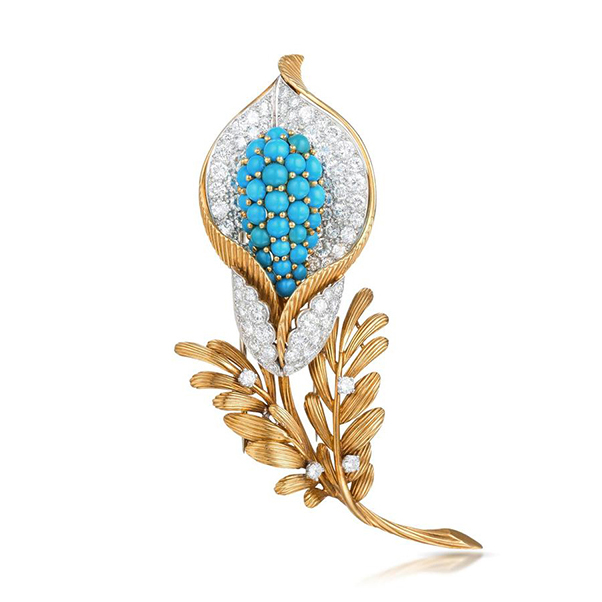
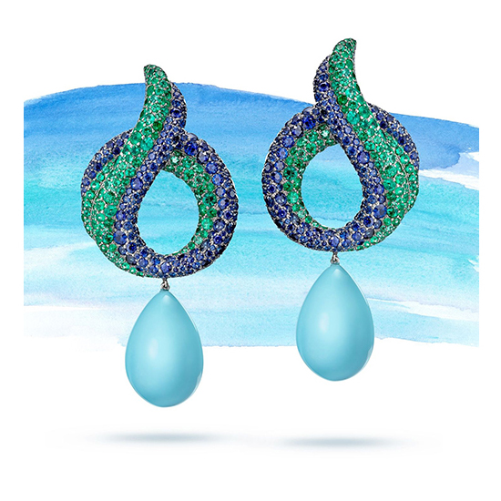
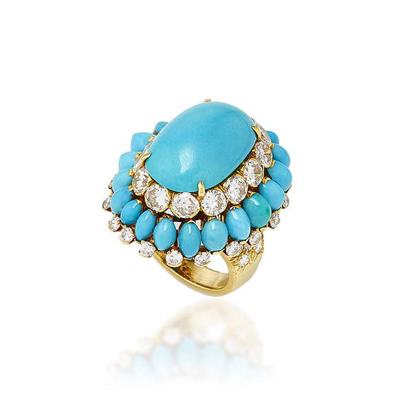
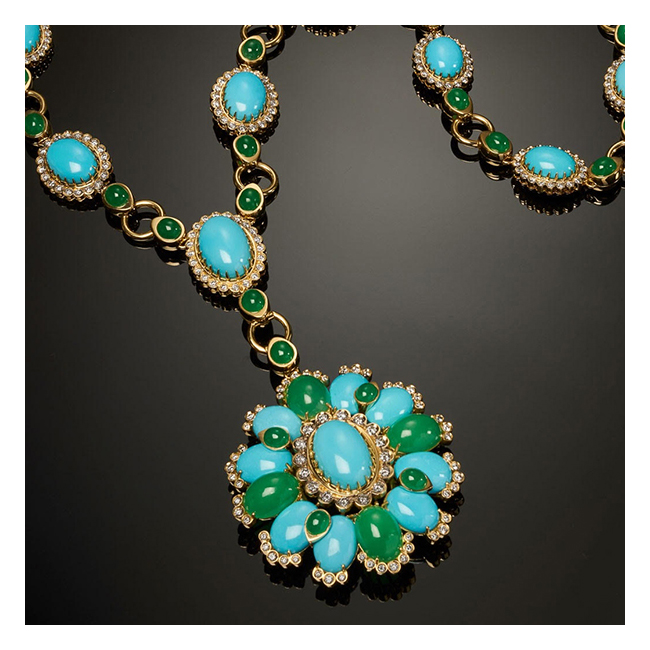
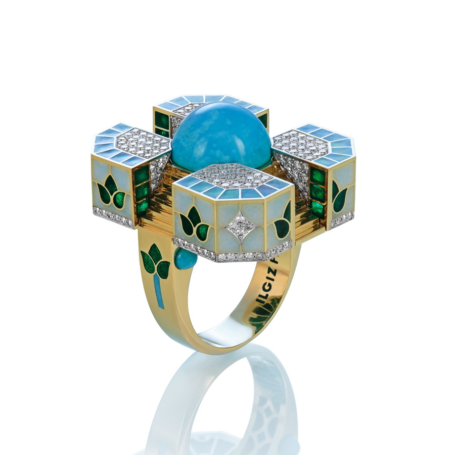
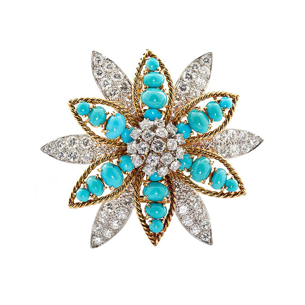
32435